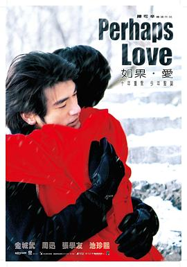

如果·爱
又名：Perhaps Love
作品信息
| 导演 | 陈可辛 / 赵良骏 |
| 编剧 | 杜国威 / 林爱华 / 阮世生 / 方晴 |
| 主演 | 金城武 / 周迅 / 张学友 / 池珍熙 / 曾志伟 / 吴君如 / 薛之谦 / 尚铁龙 / 陈铜民 |
| 类型 | 剧情 / 爱情 / 歌舞 |
| 制片国家/地区 | 中国大陆 / 中国香港 / 马来西亚 |
| 语言 | 汉语普通话 / 粤语 / 英语 |
| 上映日期 | 2005-12-01(中国大陆) / 2005-09-10(威尼斯电影节) |
| 片长 | 108分钟 |
| IMDb | tt0454914 |
最后一次看到是 2026-08-12T21:13:20+08:00 · 豆瓣原页